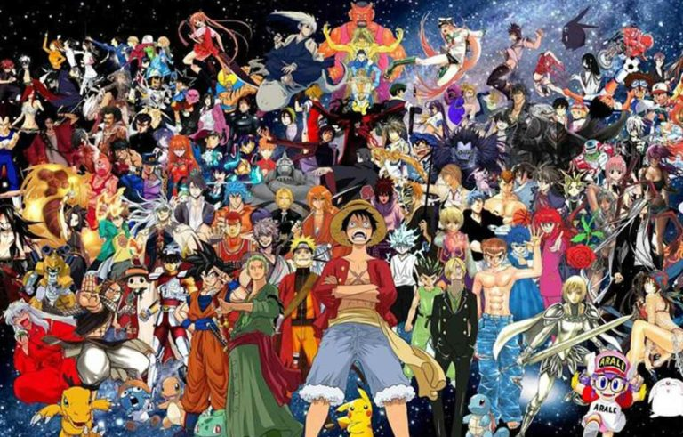

<!DOCTYPE html>
<html lang="en">
<head>
    <meta charset="UTF-8">
    <meta name="viewport" content="width=device-width, initial-scale=1.0">
    <title>Pagina de Anime</title>
    <link rel="stylesheet" href="css/estilo.css">
</head>
<body>
</html>
    <div class="padre">
        <header>
            <table>
                <tr>
                    <td><div class="logo"> </div></td>
                    <td><div class="titulo">Series De Anime</div></td>
                </tr>
            </table>
        </header>
        <nav>
            <table>
                <tr>
                    <td><div class="caja"><a href="#">Inicio</a></div></td>
                    <td><div class="caja"><a href="pag/Demon_Slayer.html">Demon Slayer</a></div></td>
                    <td><div class="caja"><a href="pag/Frieren.html">Frieren</a></div></td>
                    <td><div class="caja"><a href="pag/Solo_Leveling.html">Solo Leveling</a></div></td>
                    <td><div class="caja"><a href="pag/Tobe_HeroX.html">Tobe Hero X</a></div></td>
                    <td><div class="caja"><a href="pag/Your_Name.html">Your Name</a></div></td>
                    <td><div class="caja"><a href="pag/Contacto.html">Contacto</a></div></td>
                </tr>
            </table>
        </nav>
        <section>
            <h1 class="sub">Animes</h1>
            <p class="texto">El anime es un medio de animación originario de Japón, caracterizado por estilos visuales distintivos, como ojos grandes y expresivos, y una amplia gama de temas para todas las edades. Aunque en Japón se usa para cualquier tipo de animación, internacionalmente se refiere a series y películas producidas en el país nipón, a menudo adaptadas de mangas (historietas japonesas).</p><br>
             <br>
            <p class="texto">El anime o アニメ es un término con el que se identifica en general a la animación de procedencia japonesa. Hablamos de una industria muy potente, que fusiona el entretenimiento con la herencia cultural del país. Una de sus grandes virtudes es haber sabido seducir a públicos de cualquier gusto y edad.</p><br>
            <p class="texto">Toda generación guarda recuerdos de algún anime, pero internet lo ha impulsado aún más. Con los otakus como grandes embajadores, a día de hoy resulta un fenómeno global que influye en la música, el cine, la moda o los videojuegos.</p><br>
        </section>
        <footer>
            <h5>Diseñado por: Nehemias Corine Abalos - UMSA,2026</h5>
        </footer>
    </div>
</body>
</html>